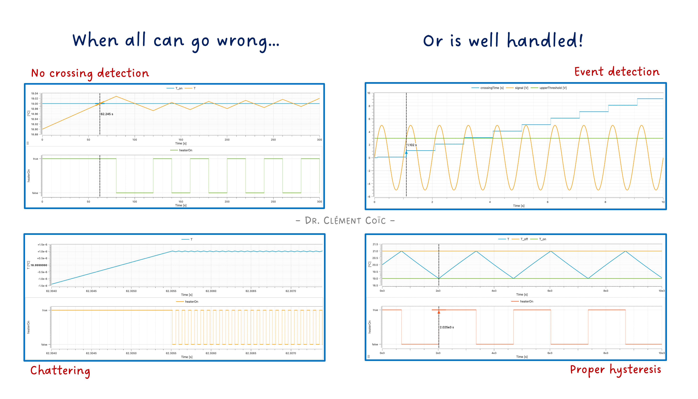
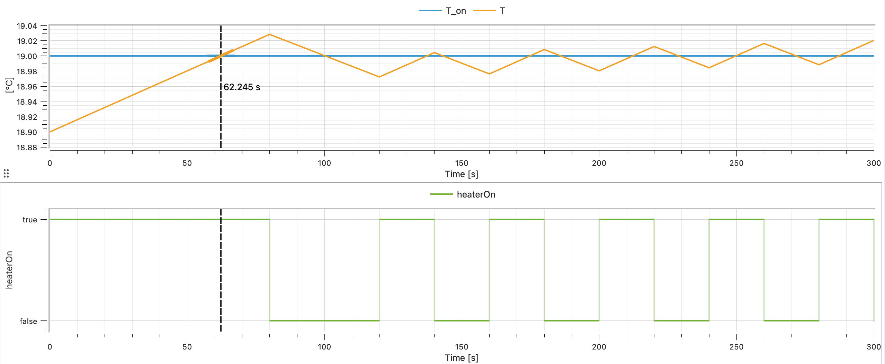
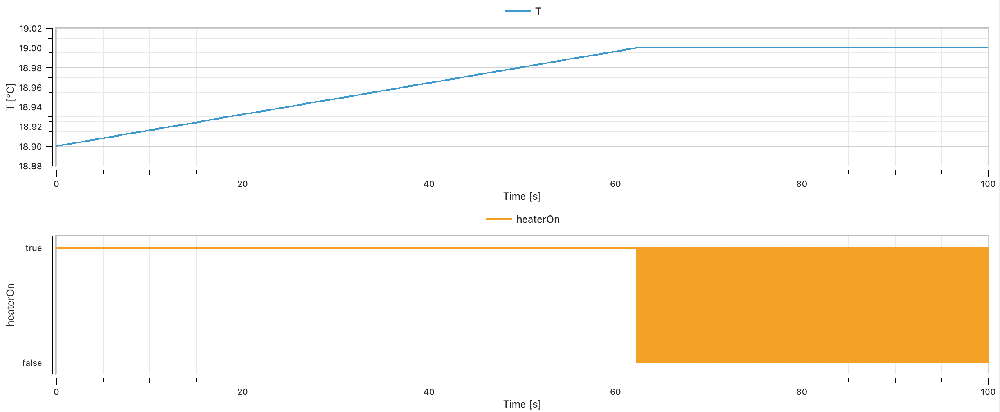
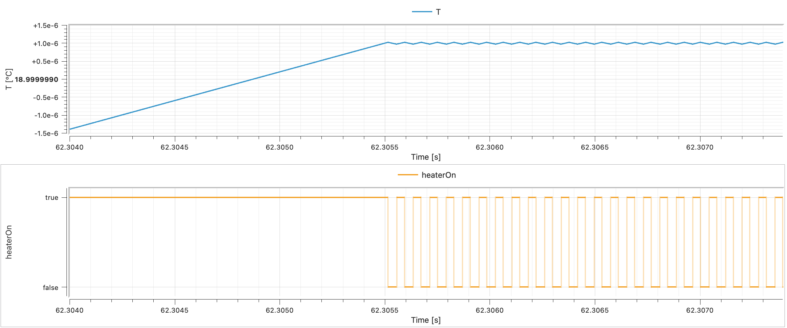
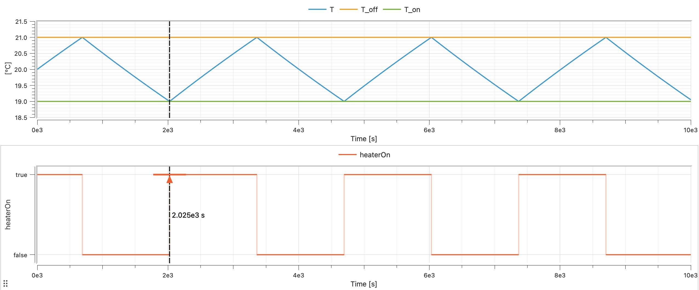
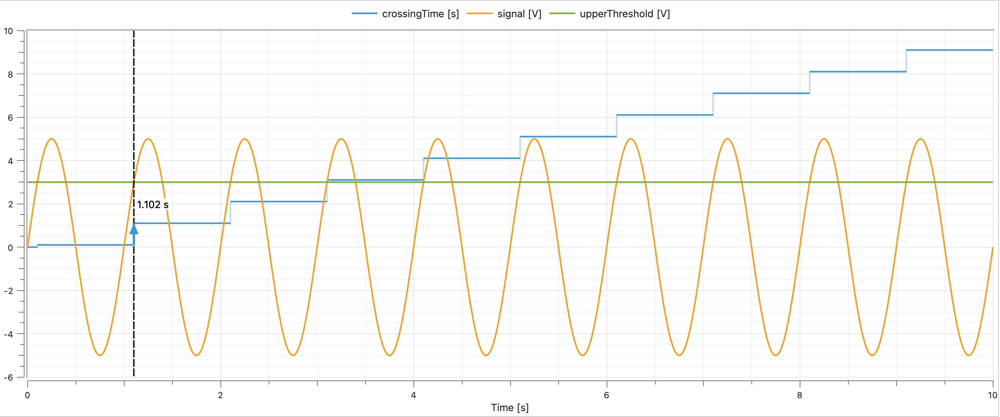
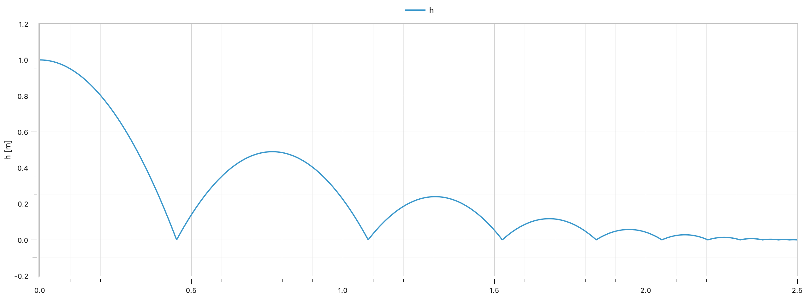

Events — When Your Simulation Hits a Wall (Literally)

I hope you’ve got your preferred drink in hand ☕️🫖💧
Remember articles 9 to 11? We learned that solvers integrate differential equations — smooth, continuous, well-behaved equations. We even built a nice oscillating mass that swings back and forth forever, smooth as butter.
Real life is not that polite. 😅
Thermostats switch on and off. Balls hit the ground and bounce. Valves open and close. Engines start and stop. The physical world is full of discontinuities — moments when things change abruptly, violently, instantly. And your smooth differential equations? They have no idea what to do with that! So far…
Today, we learn how Modelica handles “the mess” 😅.
The problem: smooth solvers, rough world
Let’s set the stage. Your ODE solver (the thing that does the time-stepping, remember article 10?) works beautifully under one assumption: the equations are smooth. Meaning: the right-hand side of your differential equations is continuous, and ideally differentiable. The solver predicts the next step based on the current trajectory — extrapolation, polynomials, all very elegant.
Now imagine you’re simulating a heated room:
if temperature < 19 then
heaterPower = 3000; // ON
else
heaterPower = 0; // OFF
end if;At 18.9°C, the heater pumps 1000 W. At 19.03°C, it delivers 0 W. The power jumps from 1000 to 0 in an instant. That jump — that discontinuity — is invisible to a solver that assumes smoothness. The solver might step right over the switching point, from 18.5°C to 19.5°C, and never notice anything happened before 19.5°C. But wait! You specified that the heater should be OFF from 19°C and onward. The solver just ignored that!

I tricked the solver into missing the switch by using a large step size. 😉 I know, I am mean. But this is to show you the problem. And you might actually face it without enforcing it at some point!
Or worse: it does notice, gets confused by the sudden change, shrinks its step size to microscopic levels, and your simulation grinds to a halt. 🐌 Then the heater power is set to 0, the rooms starts to cool down a tiny bit to 18.9999°C, the heater turns back on, the temperature jumps back up to 19.0001°C, and you get infinite switching — chattering — until your computer overheats. 🔥 (… which might warm the room and not require a heater anymore 😉.)

Now you can say you don’t see the “chattering” in the plot. Only a big orange square appearing… It is the fast switching happening in a very short time interval. Let’s zoom in:

This is the fundamental tension: physics is sometimes discontinuous, but solvers need smoothness. Modelica’s answer? Events.
Events: the solver’s safety mechanism
An event in Modelica is a precisely detected instant where something discrete happens. The key insight: the solver doesn’t handle the discontinuity — it stops before it, handles the switch, then restarts.
Here’s the sequence:
- Continuous integration — The solver happily integrates smooth equations, step by step.
- Zero crossing detected — A monitored condition (like
temperature - 19) changes sign between two steps. The solver realizes: “something happened in this interval!” - Bisection — The solver backtracks and narrows down the exact instant when the condition occurs (“zero crossing”). (Binary search, essentially.)
- Event iteration — Time freezes. The discrete changes are applied (heater switches). All equations are re-evaluated. If the changes trigger more events, those are handled too — still at the same instant.
- Restart — The solver restarts with the new, updated equations. Smooth sailing again… until the next event.
This is why Modelica simulations can handle switches, bounces, and limits without blowing up. The solver is never asked to integrate through a discontinuity — it always integrates smooth segments between events. Pretty clever. 🧠
💡 The technical term for this is hybrid simulation — a mix of continuous-time integration and discrete-event handling. It’s one of the things that sets Modelica apart from pure continuous simulation tools.
And here is a note about hybrid modeling by the way. 😊
if in equations: choosing between behaviors
The simplest way to create an event is with if in the equation section. We actually sneaked a peek at this in article 18, but let’s look at it properly now.
model HeatedRoom "Room with on/off thermostat"
import SI = Modelica.Units.SI;
parameter SI.Temperature T_on = 292.15 "Heater ON below this (19°C)" annotation(Evaluate = false);
parameter SI.Temperature T_off = 294.15 "Heater OFF above this (21°C)";
parameter SI.HeatCapacity C = 500000 "Room heat capacity";
parameter SI.ThermalConductance G = 50 "Heat loss to outside";
parameter SI.Power Q_heater = 1500 "Heater power when ON";
parameter SI.Temperature T_outside = 278.15 "Outside temperature (5°C)";
SI.Temperature T(start=293.15) "Room temperature";
Boolean heaterOn(start=true) "Heater state";
equation
// Thermostat logic with hysteresis
when T < T_on then
heaterOn = true;
elsewhen T > T_off then
heaterOn = false;
end when;
// Energy balance
C * der(T) = (if heaterOn then Q_heater else 0) - G * (T - T_outside);
annotation(
experiment(
StopTime = 10000.0
)
);
end HeatedRoom;A few things to notice:
The when clause handles the switching logic (we’ll get to when properly in a moment). It generates events when the temperature crosses the thresholds.
The if expression inside the energy balance equation (if heaterOn then Q_heater else 0) selects the heater power based on the current state. This is an if expression (inline, inside an equation), not an if equation (with its own equation block). Both exist in Modelica — and they behave differently with respect to events. More on that in a moment.
The hysteresis (ON below 19°C, OFF above 21°C) prevents the thermostat from chattering endlessly at a single threshold. This is not just a modeling trick — it’s how real thermostats work. Without hysteresis, you’d get infinitely fast on-off-on-off switching at exactly 19°C. Not fun for your solver, not fun for your heater. 😵💫

Beautiful curves, right?
when: reacting to specific instants
when is the star of Modelica’s event system. It defines actions that happen at specific instants — not continuously, not repeatedly, just once when a condition becomes true.
when condition then
// These equations are activated at the instant
// when 'condition' becomes true
end when;Key rules for when:
- Triggered on rising edge only. A
whenfires when its condition changes fromfalsetotrue. Not while it stays true. Not when it becomes false. Only the transitionfalse → true. - Equations inside
whenare discrete. They’re not part of the continuous equation system. They execute once, at the event instant. - You can have
elsewhen. Multiple conditions, checked in order.
Here’s a simple example — a timer that logs when a threshold is crossed:
model ThresholdDetector
import SI = Modelica.Units.SI;
import Modelica.Constants.pi;
parameter SI.Voltage upperThreshold = 3 "Upper threshold value" annotation(Evaluate = false);
SI.Voltage signal = 5 * sin(2 * pi * time);
SI.Time crossingTime "Time when signal exceeds threshold";
equation
when signal > upperThreshold then
crossingTime = time;
end when;
end ThresholdDetector;
Every time signal rises past 3.0 V, crossingTime is updated to the current time. When signal drops below 3.0 V? Nothing happens — when only fires on the rising edge.
when vs if — the crucial difference
This confuses everyone at first (it confused me 🙋), so let’s be very explicit:
if equation |
when equation |
|
|---|---|---|
| Activation | Active whenever condition is true | Fires once when condition becomes true |
| Duration | Continuous — holds as long as true | Instantaneous — executes at the event instant |
| Equations | Continuous equations | Discrete assignments |
| Use for | Switching between equation regimes | Triggering instantaneous actions |
An if equation says: “while this is true, use these equations.” A when equation says: “at the exact moment this becomes true, do this.”
reinit(): resetting the clock
Now for the fun one. Sometimes, at an event instant, you need to reset a continuous state variable to a new value. That’s what reinit() does.
The classic example: a bouncing ball.
model BouncingBall "Ball bouncing on the floor"
import SI = Modelica.Units.SI;
import Modelica.Constants.g_n;
parameter Real e = 0.7 "Coefficient of restitution";
SI.Height h(start=1.0, fixed=true) "Height above ground";
SI.Velocity v(start=0.0, fixed=true) "Vertical velocity";
equation
der(h) = v;
der(v) = -g_n;
when h < 0 then
reinit(v, -e * pre(v));
end when;
end BouncingBall;Let’s walk through this:
- Free fall:
der(v) = -g_n— the ball accelerates downward.der(h) = v— its height changes with velocity. Smooth, continuous, the solver is happy. - Impact detection:
when h < 0— when the height crosses zero (the floor), an event fires. - Velocity reset:
reinit(v, -e * pre(v))— the velocity is instantly set to-etimes its value just before the event. If it was falling at -5 m/s, it’s now rising at 3.5 m/s (withe=0.7). - Restart: The solver restarts from the new state. The ball goes up, slows down, comes back down, bounces again…

What’s pre()?
You noticed pre(v) in the reinit call. pre() gives you the value of a variable just before the current event. It’s essential inside when clauses because during event iteration, variables might already have been updated. pre() says: “give me what this was before everything started changing.”
Think of it as a snapshot: pre(v) is the velocity the instant before the ball hits the ground. Without pre(), you’d risk using a value that’s already been modified by the event — leading to incorrect (or infinite) bouncing.
🤓
pre()only makes sense for discrete variables and insidewhenclauses. Don’t use it on continuous variables outside of events — it has no meaning there.
if equations vs if expressions — round 2
I promised to come back to this, so here we go. Modelica has two kinds of if:
if equations (full blocks)
equation
if condition then
a = expr1;
b = expr2;
else
a = expr3;
b = expr4;
end if;These switch between sets of equations. Important rules:
- Same number of equations in each branch. The system must remain balanced (remember article 22 and square systems?).
- Same variables must be solved in each branch.
- The condition generates events — the solver detects when it changes and handles the switch cleanly.
if expressions (inline)
equation
a = if condition then expr1 else expr2;These are just conditional values inside an equation. One equation, two possible right-hand sides. Also generates events.
When you don’t want events: noEvent()
Sometimes an if expression represents a smooth transition that doesn’t need event detection. For instance:
y = if x > 0 then x^2 else 0;Mathematically, this is continuous (and even differentiable) at x = 0. There’s no real discontinuity — both sides meet smoothly at zero. But Modelica will still generate an event when x crosses zero, because it sees an if with a condition. Unnecessary work.
Enter noEvent():
y = noEvent(if x > 0 then x^2 else 0);This tells the solver: “don’t bother detecting events here. Just evaluate the expression directly.” The solver won’t stop for bisection or event iteration — it’ll integrate right through the crossing.
Use noEvent() when:
- The expression is continuous regardless of the condition.
- You want to avoid unnecessary event overhead.
- You know the discontinuity (if any) is small enough that the solver can handle it.
- You don’t care about the exact instant of crossing, just the overall behavior.
Don’t use noEvent() when:
- There’s a real discontinuity (like a thermostat switch).
- The solver needs to detect the crossing for physical correctness.
- You’re not sure (when in doubt, let events happen).
⚠️ Using
noEvent()incorrectly can lead to wrong results. The solver might step right over a discontinuity and produce nonsensical values. For example, you could think of saturating absolute pressures with a minimum of zero, and if the solver ignores the event, you might get negative pressures… which is physically impossible for an ABSOLUTE pressure. So all in all, use it with care. :)
A quick reference card
| Keyword/Function | What it does | When to use |
|---|---|---|
when ... then |
Fire actions at a specific instant | Discrete state changes, triggers |
elsewhen |
Additional event conditions | Multiple trigger conditions |
if ... then (equation) |
Switch between equation sets | Different physics regimes |
if ... then (expression) |
Conditional value in an equation | Inline switching |
reinit(x, value) |
Reset a state variable at an event | Bounces, resets, sudden changes |
pre(x) |
Value just before the current event | Inside when to access pre-event state |
noEvent(expr) |
Suppress event generation | Smooth expressions that don’t need events |
The END for today
Enough for today. Events are one of those topics that sound complicated in theory but become intuitive once you see them in action. The bouncing ball, the thermostat — these are textbook examples, but the same mechanisms power complex industrial models: clutch engagement in drivetrains, pressure relief valves in hydraulics, breaker trips in electrical grids…
The key takeaway: Modelica separates smooth physics from discrete logic, and events are the bridge. The solver handles the smooth parts, events handle the jumps, and reinit() stitches them together.
Break is over, go back to what you were doing.
Clem
Next ->
© 2025-2026 Clément Coïc — Licensed under creative commons 4.0. Non-commercial use only.